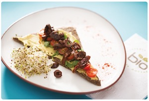

Entradas

▪Tiras de mussarela
TIras de mozzarella assados
▪ Jalapeños recheados
Jalapeños recheados com camarão e queijo cheddar com bacon.
▪ Ração Rabas
220 gr. de torresmos de lula frito com alioli
▪ Porção de batatas fritas com Cheddar e bacon
▪ Asas de frango
Torta de asas de frango fritas com molho de churrasco
▪ Croquetes de cogumelos
Croquetes feitos de cogumelos dessecados.
▪ Camarão rei em cuscuz
Camarões grelhados com nozes, tomate cereja e manjericão
▪ Bebês de lula grelhado
Com manga e melancia grelhada
▪ Nachos com reescar
Nachos refogados com feijão preto, chouriço vermelho e molho barbecue
▪ Cobertura de pudim preto
Pão caseiro de campo, muçarela e queijo brie.
▪ Cobertura de campo
Chouriço de sangue, batata, chutney de maçã e creme de endro
▪ Tampa de moela
Pão doce com manga, abacaxi, gengibre, pimenta e pipoca.
Pratos principais
▪ Bife Criollo
Ribeye com batatas andinas, salada de rúcula, provolone e molho crioulo
▪ Salada Caesar
Clássica, com frango ou camarão
▪ Penne Rigatte
Com bife, creme ou molho rosé
▪ Salada de camarão rei
Camarões refogados com cebolinha e molho de laranja, vinagre e azeite
▪ Ceviche (feito na época)
Pesca do dia com cebola roxa, alho, pimenta, aipo, coentro, gengibre, milho, batata-doce e leite de tigre
▪ Pesca com Chop Suey

Peixe grelhado com azeitonas, alho e alcaparras, acompanhado de vegetais chop suey
▪ Pesca na grelha
Com risoto verde de espargos e beterraba assada
▪ Bife T-Bone
600 g de carne com chimichurri, batatas andinas e beterrabas em conserva
▪ Pechuguitas defumados
Peito de frango defumado recheado com cogumelos e duxelle de cebola
▪ Carré de cerdo
Com chutney, cenouras e batata-doce ao molho teriyaki
▪ Sorrentinos verdes
Recheados com abóbora assada e queijo brie, com manteiga de ervas e toque de toranja